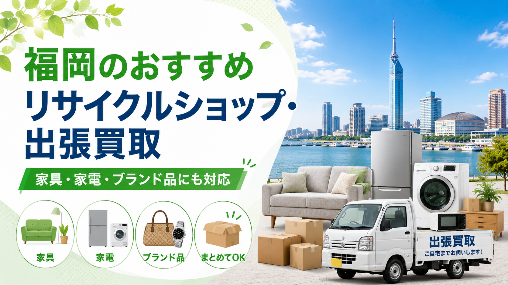

九州お問合せ 10:00-20:00 年中無休
LINE・WEB受付
LINE査定
RECYCLE SHOP GUIDE / FUKUOKA
福岡で家具・家電・ブランド品・貴金属・楽器・ホビー用品などを売りたいと考えたとき、まず候補になるのがリサイクルショップと出張買取サービス。本記事では福岡で利用しやすい大手5チェーンを比較しながら、売りたい品目別の選び方や、出張買取を上手に使うコツまで解説します。

福岡で家具・家電・ブランド品・貴金属・楽器・ホビー用品などを売りたいと考えたとき、まず候補になるのがリサイクルショップと出張買取サービスです。
福岡市内には、天神・博多・西新・香椎・大橋・姪浜など、引越しや買い替えの多いエリアが多く、中古品の売買ニーズも活発です。また、福岡市だけでなく、春日市、大野城市、糟屋郡、久留米市、北九州市などでも出張買取を利用する人が増えています。
特に大型家具や家電を売る場合、自分で店舗まで運ぶのは大きな負担になります。冷蔵庫、洗濯機、ソファ、食器棚、ベッド、テレビボードなどは、車がないと持ち込みが難しく、搬出にも人手が必要です。
そのため、福岡で不用品をまとめて売りたい場合は、店舗型のリサイクルショップだけでなく、出張買取を上手に活用するのがおすすめです。
福岡でリサイクルショップを選ぶ際は、単に「近い店」だけで決めるのではなく、売りたい品目に強い店舗やサービスを選ぶことが大切です。
たとえば、家具や家電を売りたい場合は、大型品の査定や搬出に慣れている業者が向いています。一方で、ブランドバッグや時計、貴金属を売りたい場合は、ブランド品専門の査定に強い買取店の方が高く売れる可能性があります。
また、引越しや家の片付けで大量の不用品がある場合は、1点ずつ持ち込むよりも、まとめて査定してくれる出張買取サービスの方が効率的です。
福岡では単身者向けマンション、ファミリー向け住宅、学生向け賃貸、転勤族の住まいなど、さまざまな生活スタイルがあります。そのため、リサイクルショップや出張買取を選ぶときも、自分の状況に合ったサービスを選ぶことが重要です。
福岡でリサイクルショップを探すなら、まずは福岡県内で実店舗を展開している大手チェーンを候補に入れるのがおすすめです。
大手チェーンは、店舗数が多く利用しやすいだけでなく、買取品目が幅広い、査定基準が比較的安定している、店頭買取・宅配買取・出張買取など複数の買取方法を選びやすいというメリットがあります。
ここでは、福岡で利用しやすいおすすめのリサイクルショップチェーンを5つ紹介します。
セカンドストリートは、福岡県内でも店舗数が多い大手総合リユースショップです。
古着、ブランド品、バッグ、靴、家具、家電、生活雑貨、アウトドア用品、ホビー用品など、幅広いジャンルを取り扱っているため、「何を売ればよいかわからない」「まとめて査定してほしい」という人にも利用しやすいチェーンです。
福岡市内だけでなく、北九州、久留米、春日、大野城、糸島、飯塚などにも店舗があり、地域ごとに利用しやすいのが大きな特徴です。
特に古着やファッションアイテムに強いイメージがありますが、店舗によっては家具・家電の取り扱いもあります。引越し前の不用品整理、洋服の整理、ブランドバッグやスニーカーの買取など、幅広い用途で使いやすいリサイクルショップです。
一方で、店舗によって取り扱い品目や出張買取対応の有無が異なるため、大型家具や大型家電を売りたい場合は、事前に最寄り店舗の対応内容を確認しておくと安心です。
BOOKOFFは、本、CD、DVD、ゲーム、ホビー用品を売りたい人に特におすすめの大手リユースチェーンです。
福岡県内にも多くの店舗があり、福岡市内では博多、天神、六本松、大橋、長住、野多目、福重、飯倉など、生活圏に近い場所で利用しやすいのが特徴です。北九州、久留米、春日、大野城、太宰府、宗像、糸島、柳川、筑後などにも店舗があります。
BOOKOFF SUPER BAZAARのような大型店舗では、本やゲームだけでなく、古着、ブランド品、家電、ホビー、スポーツ用品など、より幅広いジャンルを扱っている場合があります。
本、漫画、ゲーム、フィギュア、トレカ、DVD、CDなどをまとめて売りたい場合は、BOOKOFFが候補になります。大型家具や大型家電よりも、持ち運びしやすい小型品・メディア系・ホビー系に向いているリサイクルショップです。
ハードオフグループは、家電、オーディオ、楽器、パソコン、工具、ホビー、家具、生活用品などに強いリユースチェーンです。
ハードオフはオーディオ機器、楽器、パソコン、ゲーム機、カメラ、工具などに強く、オフハウスは家具、家電、衣類、生活雑貨、ブランド品などを扱う店舗として知られています。
福岡で家電や楽器、オーディオ機器、パソコン周辺機器などを売りたい場合は、ハードオフ系の店舗を候補に入れるとよいでしょう。
特に、ギター、アンプ、スピーカー、レコードプレーヤー、カメラ、ゲーム機、パソコンなどは、一般的なリサイクルショップよりも専門性のある査定が期待できる場合があります。
一方で、店舗ブランドによって得意ジャンルが異なるため、家具や衣類ならオフハウス、楽器やオーディオならハードオフというように、売りたいものに合わせて店舗を選ぶのがおすすめです。
トレジャーファクトリーは、家具、家電、洋服、ブランド品、雑貨、ホビー用品などを幅広く扱う総合リサイクルショップです。
公式サイトでは、大型家具・家電をはじめ、洋服、雑貨、ブランドアイテム、スポーツ・アウトドア用品、楽器、おもちゃ・ホビーなど、多彩な商品の買取・販売を行っていることが案内されています。
福岡で家具・家電を売りたい場合や、新生活用品を中古で探したい場合に候補に入れやすいリサイクルショップです。
冷蔵庫、洗濯機、ソファ、ダイニングテーブル、食器棚、テレビボードなどを売りたい場合は、最寄り店舗の取り扱い品目や出張買取の対応状況を確認しておくとよいでしょう。
リサイクルマートは、福岡県内に複数店舗を展開しているリサイクルショップチェーンです。
福岡市内では福重、原、大橋、片江などに店舗があり、春日、大野城、糸島、志免、筑後、柳川、八女、直方、田川、大牟田、門司などにも店舗があります。
リサイクルマートは、店舗によって店頭買取、出張買取、回収・片付け、遺品整理・財産整理などに対応している場合があり、単品の買取だけでなく、家の片付けや大量の不用品整理でも相談しやすいチェーンです。
家具、家電、ブランド品、貴金属、工具、ホビー用品、生活雑貨など幅広い品目を扱う店舗が多いため、「家の中の不用品をまとめて相談したい」という人に向いています。
特に福岡で実家整理、引越し、空き家整理、家まるごとの片付けを考えている場合は、リサイクルマートのように出張買取や片付け相談に対応している店舗を候補に入れるとよいでしょう。
※ 各社の取り扱い品目・出張買取対応の有無・対応エリアは店舗ごとに異なる場合があります。最新情報は各公式サイトをご確認ください。
福岡には大手リサイクルショップチェーンが複数ありますが、どの店舗が一番よいかは、売りたいものによって変わります。
古着・ブランド品を売りたいなら ➡ セカンドストリート
本・ゲーム・ホビー用品を売りたいなら ➡ BOOKOFF
楽器・オーディオ・パソコン関連なら ➡ ハードオフ
家具・家電を売りたいなら ➡ トレジャーファクトリー／リサイクルマート
また、少量の品物なら店頭買取でも十分ですが、大型家具や大型家電、家まるごとの片付け、大量の不用品整理の場合は、出張買取に対応している業者を選ぶ方が便利です。
福岡で不用品を売る場合は、近くのリサイクルショップを探すだけでなく、「何を売りたいのか」「どれくらいの量があるのか」「自分で持ち込めるのか」を整理したうえで、最適な買取方法を選びましょう。
福岡のリサイクルショップや出張買取で売れやすいものには、次のような品目があります。
冷蔵庫、洗濯機、電子レンジ、炊飯器、掃除機、エアコン、テレビ、空気清浄機などの生活家電は、状態や年式によって買取対象になりやすい品目です。
特に一人暮らし用の冷蔵庫や洗濯機は、福岡市内の学生・単身者需要と相性がよく、状態が良ければ査定対象になりやすい傾向があります。
ただし、家電は製造年式が重要です。一般的に古すぎる家電は買取が難しくなることがあるため、売るなら早めに査定を依頼するのがおすすめです。
ソファ、ダイニングテーブル、チェア、テレビボード、食器棚、収納棚、ベッドフレーム、デスクなどの家具も、福岡で出張買取の相談が多い品目です。
特にブランド家具、状態の良い家具、デザイン性の高い家具は評価されやすくなります。一方で、大きな傷や汚れ、破損、組み立て家具の劣化がある場合は、買取が難しいこともあります。
大型家具は店舗への持ち込みが大変なため、出張買取との相性が良い品目です。
ブランドバッグ、財布、腕時計、ジュエリー、金、プラチナなどは、専門査定が重要なジャンルです。
福岡市内では天神や博多周辺にブランド買取店も多く、店頭査定を利用しやすいエリアです。ただし、複数点まとめて売りたい場合や、他の家具・家電と一緒に整理したい場合は、出張買取でまとめて相談する方法もあります。
ギター、電子ピアノ、アンプ、スピーカー、レコードプレーヤー、カメラ、レンズなども、状態やメーカーによっては買取対象になります。
これらは専門性が高いため、一般的なリサイクルショップよりも、査定経験のある業者に依頼した方が安心です。
フィギュア、ゲーム機、レトロゲーム、鉄道模型、プラモデル、トレーディングカード、アニメグッズなども、需要のあるジャンルです。
福岡には学生や若い世代も多いため、ホビー系の中古市場も一定のニーズがあります。箱や付属品が残っている場合は、査定前にまとめておくと評価されやすくなります。
福岡で不用品を売る場合、次のようなケースでは出張買取が特におすすめです。
冷蔵庫、洗濯機、ソファ、ベッド、食器棚などは、店舗に持ち込むだけでも大変です。
出張買取なら、自宅まで査定スタッフが来てくれるため、搬出の負担を減らせます。特にマンションやアパートの上階に住んでいる場合、自力で運び出すのは危険なこともあります。
福岡は転勤、進学、就職、単身赴任などで引越しが多い地域です。
引越し前に家具や家電を処分したい場合、出張買取を利用すれば、複数の不用品をまとめて査定してもらえます。売れるものは買取、売れないものは処分方法を相談できる場合もあります。
福岡県内では、実家の片付けや空き家整理の相談も増えています。
家具、家電、食器、贈答品、着物、骨董品、趣味用品などが大量にある場合、ひとつずつ店舗へ持ち込むのは現実的ではありません。出張買取なら、家の中を確認しながら査定してもらえるため、片付けの第一歩として利用しやすい方法です。
福岡市内では公共交通機関で生活している人も多く、大型品を店舗まで運ぶのが難しいケースがあります。
車を借りたり、家族や友人に手伝ってもらったりする手間を考えると、出張買取を依頼した方が効率的です。
リサイクルショップのメリットは、その場で査定してもらいやすく、少量の品物を売るときに便利な点です。
たとえば、衣類、雑貨、小型家電、ゲーム、ホビー用品、本、食器など、持ち運びしやすいものは店頭買取でも十分対応できます。
また、店舗によっては販売コーナーもあるため、売るだけでなく、中古家具や家電を安く購入したい人にも便利です。福岡で新生活を始める学生や単身者にとって、リサイクルショップは費用を抑えて生活用品を揃えられる場所でもあります。
一方で、大型品や大量の不用品を売る場合は、店舗へ持ち込む手間が大きくなります。その場合は、出張買取を組み合わせて考えるとよいでしょう。
福岡で不用品を少しでも高く売るためには、査定前の準備が大切です。
家具や家電は、見た目の印象が査定に影響することがあります。
ほこり、汚れ、シール跡、食品汚れなどをできる範囲で落としておくと、査定時の印象が良くなります。冷蔵庫や電子レンジなどは、内部の汚れも確認されやすいため、事前に軽く掃除しておくのがおすすめです。
家電のリモコン、説明書、保証書、ケーブル、棚板、部品などが残っている場合は、査定前にまとめておきましょう。
ブランド品であれば、箱、保存袋、ギャランティカード、購入証明書などがあると評価されやすくなります。
家電や家具は、時間が経つほど価値が下がりやすい品目です。
特に家電は年式が重要になるため、「いつか売ろう」と思っているうちに買取対象外になることもあります。使わないと決めたら、できるだけ早めに査定を依頼するのがおすすめです。
1点だけよりも、複数点まとめて査定に出した方が出張買取を利用しやすくなる場合があります。
冷蔵庫、洗濯機、電子レンジ、テレビ、ソファ、テーブルなどをまとめて依頼すれば、引越しや片付けの負担も減らせます。
福岡市内では、次のようなエリアで出張買取のニーズが高い傾向があります。
博多駅周辺は単身者、転勤者、ビジネス利用の住まいが多いエリアです。引越しや転勤に伴う家具・家電の買取ニーズがあります。
天神周辺はマンションや店舗、オフィスも多く、ブランド品、小型家電、家具、店舗用品などの買取相談が発生しやすいエリアです。
学生、単身者、ファミリー層が混在するエリアです。引越しや住み替えに伴い、家具や家電の出張買取ニーズがあります。
ファミリー層が多い地域では、買い替えや住み替えに伴う大型家具・家電の買取相談が多くなります。
住宅街が広がるエリアでは、家の片付け、実家整理、引越し前の不用品整理などで出張買取が利用されやすいです。
福岡市以外でも、出張買取はさまざまな地域で利用されています。
春日市、大野城市、太宰府市、筑紫野市、糟屋郡、古賀市、福津市、宗像市、久留米市、北九州市などでは、家具・家電・家財整理の相談が多い地域です。
ただし、対応エリアは業者によって異なります。依頼前には、自宅が出張対象エリアに入っているか確認しておくと安心です。
福岡で不用品を売る場合、リサイクルショップと出張買取は次のように使い分けるのがおすすめです。
少量の小物や持ち運びしやすい品物を売るなら、店頭買取が便利です。すぐに査定してもらいやすく、買い物ついでに利用できるメリットがあります。
一方で、大型家具、大型家電、大量の不用品、実家整理、引越し前の片付けなどは、出張買取の方が向いています。自宅で査定してもらえるため、搬出や移動の負担を減らせます。
特に福岡市内のマンションや集合住宅では、大型品を運び出すだけでも大変です。無理に自分で運ぼうとせず、出張買取を活用する方が安全で効率的です。
出張買取を依頼する前には、いくつか確認しておきたいポイントがあります。
まず、出張費や査定費がかかるかどうかを確認しましょう。無料で対応している業者もありますが、地域や品目によって条件がある場合もあります。
次に、買取できない品目があるか確認することも大切です。古すぎる家電、破損した家具、汚れが強いもの、安全基準に関わるものなどは買取対象外になることがあります。
また、買取金額だけでなく、搬出対応の有無も確認しておくと安心です。大型家具や家電の場合、査定後に運び出しまで対応してもらえるかどうかは重要なポイントです。
福岡には多くのリサイクルショップがありますが、売りたいものや状況によって最適な方法は変わります。小型の品物を少しだけ売るなら店頭買取、大型家具や家電をまとめて売るなら出張買取が便利です。
特に引越し、買い替え、実家整理、空き家整理などで不用品が多い場合は、出張買取を利用することで、片付けの負担を大きく減らせます。
福岡でリサイクルショップや出張買取を利用するなら、売りたい品目と量に合わせてサービスを選ぶことが大切です。
古着やブランド品ならセカンドストリート、本・ゲーム・ホビー用品ならBOOKOFF、楽器・オーディオ・パソコン関連ならハードオフ、家具・家電ならトレジャーファクトリーやリサイクルマートなど、目的に合わせて使い分けるとよいでしょう。
家具や家電、ブランド品、楽器、ホビー用品などは、状態や年式、付属品の有無によって査定額が変わります。少しでも高く売りたい場合は、掃除をして、付属品をそろえ、できるだけ早めに査定を依頼しましょう。
福岡市内はもちろん、春日市、大野城市、太宰府市、糟屋郡、久留米市、北九州市などでも、出張買取を活用すれば大型品や大量の不用品を効率よく整理できます。
リサイクルショップへの持ち込みが難しい場合や、家まるごと片付けたい場合は、出張買取を検討してみてください。